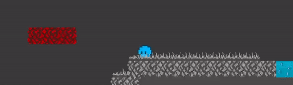

At the end of my first year at ETPA, we had to make our first "real" videogame : a platformer, based on the original Super Mario Bros. but with a unique mechanic. The game had to last approximately 5 minutes and be made with Phaser 3.
At first, I had the idea of mixing platforming and puzzle solving. You would've had to play 2 characters : one dressed in blue and one dressed in red. Only the Blue character would've been able to interact with Blue elements (such as buttons to open doors for example) and vice versa. However, my Programming teacher told me it was a bit too complicated for a first game (and probably boring, too), so I had to give the whole thing another thought.
I decided to keep the concept of using different colors in order to progress through the game but instead of playing 2 characters, you would play 1 who's able to swap between Blue and Red with the press of a button. I ditched the whole puzzle-solving idea and instead decided to use the color-swapping mechanic to make a fast-paced platformer inspired by Maddy Makes Games' Celeste.
Thus, the main idea behind Kaif and the Lost Colors was born.
Mechanics
Keeping the main mechanic of the game pretty simple allowed me to think about other mechanics revolving around the same concept : if you touch any element while being in the wrong color, you die.
So here is a list of mechanics that came into my mind :
- Simple static platforms,
- Moving platforms,
- Trampolines,
- Speed boosts.
I also decided to add some other things not revolving around color-swapping such as :
- Spikes,
- Secret walls leading to collectibles,
- A speedrunning clock.
That being said, let's move on to the first (major) problem I encountered : making the moving platforms.
Moving PlatformsYou see, on paper, a moving platform is pretty straightforward : a platform, moving left to right while the player move alongside it. Simple, right ? Well...
...For some reason, when I instantiated my moving platforms, the player was only moving alongside the very last one, and simply standing still and falling off all the other ones. So I had to fix that. After trying a few different solutions, I figured out that modifying the player's speed to match the platforms' speed in any of the two directions while standing on them was the solution. Here's how I did it :
if (this.body.touching.up && this.movePlayer === true)
{
player.getAccel(this.body.velocity.x + this.nSpeed * this.nDir - 0.02);
this.movePlayer = false;
}
else if (this.movePlayer === false)
{
player.getAccel(0);
this.movePlayer = true;
}
In the character.js class
getAccel (newPlatformVelocity) //allow the player to stay on a moving platform
{
this.initialPlatformVelocity = newPlatformVelocity;
}
These two functions are running every frame, so it's probably not the best solution, especially for a game made to run in the browser, but I didn't know any better at the time and for a 5 minutes demo, it was good enough.
Now, let's take a look at the biggest problem I had to face : making sure the speed boosts were working correctly.
Speed BoostsKaif and the Lost Colors features 2 kinds of speed boosts : one boosting the player to the left and one boosting the player to the right. With alternating colors of course, to keep that fast-paced color-swapping principle.
The main idea was really simple to implement : when the player collide with a speed boost while being the right color, their speed increases. However 2 problems arose :
First, when the player was colliding with a boost in the wrong direction (such as entering a left boost from the right), they would instantly get pushed back, as the boost was trying to send them in the direction it was facing. I didn't want that, as it would prevent the player to go back if they missed a collectible and could also put a stop to any momentum, making the movement very frustrating to handle near the boosts.
I fixed it by performing a simple check on the player's direction to know which one they were facing, and only activated the boost if they were facing the right one :
collision(delta)
{
if(this.right)
{
player.boostRight = true;
}
else
{
player.boostLeft = true;
}
if (this.boostLeft == true)
{
this.body.velocity.x =this.initialPlatformVelocity + -800;
//"initialPlatformVelocity" is actually the player's speed,
//I forgot to rename it after handling the previous problem
}
else
{
this.body.velocity.x = this.initialPlatformVelocity-300;
//in JS, Left is the "negative" direction, hence "-300" on the speed, same for above
}
if (this.boostRight == true)
{
this.body.velocity.x =this.initialPlatformVelocity + 800;
}
{
this.body.velocity.x = this.initialPlatformVelocity + 300;
}
Once that was fixed I realized that after being boosted, the player weren't loosing their speed when colliding with a wall, allowing them to accumulate more and more speed to the point where they were able to skip entire parts of the level, and even phasing through walls !
Here's how I handled it :
if ((this.walkRight.isUp || this.body.blocked.right) && !this.stunned&& !gameEnded)
{ //if the "walkRight" key is not pushed OR the player is blocked from the Right
this.boostRight = false;
}
if ((this.walkLeft.isUp || this.body.blocked.left) && !this.stunned&& !gameEnded)
{//same than above but for the Left
this.boostLeft = false;
}
And with that, my speed boosts were working as intended !
If I had to remake the game today, what would I do differently ?
The game's main downside (according to me) is its poor optimization. It runs smoothly as of now because it's a 5 minutes demo but I bet it would become pretty laggy if I had to turn it into a fully fleshed out game with the methods I used to code the mechanics.
I would also take the time to implement mechanics I had to ditch in order to respect the deadline such as wall-jumping for example.
Finally, the game can feel pretty unfair right now due to the absence of coyote-time to compensate for the delay between your eyes receiving an information and your hands performing an action in response. I didn't know that existed at the time so I would definitely implement it now.
A few weeks after release, I remade the game with Unity, mainly because I thought it would be a good entry point to start learning C#. I didn't have the necessary hindsight to change everything I just listed though so everything pretty much stayed the exact same.
ConclusionWhile this project might seem pretty simple at first glance, the problems I had to overcome were still pretty challenging for a beginner like me. But it was also what sparked my interest in the programming part of Game Development.
All in all, Kaif and the Lost Colors was a very formative project, and it getting the 2nd best grade of the whole class comforted me in my ability to learn more and do better on future, more complex projects.